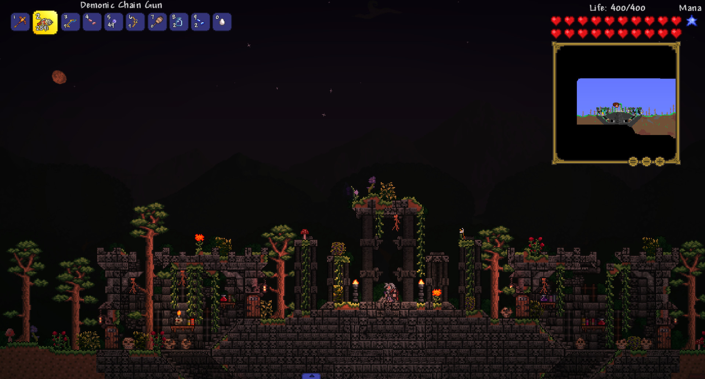
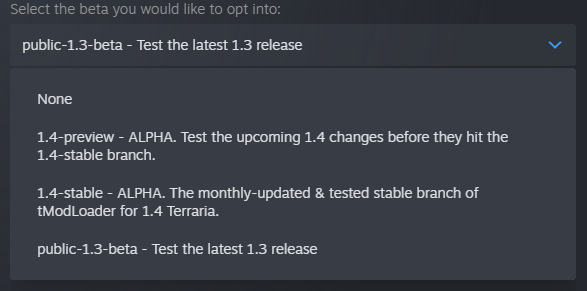

用了快两年的 tModLoader，我得说说它哪些地方真的离不开
从装第一个模组到现在，经历了版本迭代、存档迁移、模组环境崩了又救——聊聊这款泰拉瑞亚模组加载器在时间里显出的真东西。
tModLoader 装到现在快两年了。最初是为了玩灾厄，后来瑟银、Fargo、一堆 QoL 模组轮着开，中间还折腾过安卓移植版和 Steam 测试分支。当初选它没多想，社区清一色推荐，装上就能跑。两年过去，有些判断变了，有些习惯改不掉，还有些当初没注意的坑慢慢浮了上来。
当初为什么装它
说出来有点好笑——原版泰拉瑞亚我通关了三次，机械骷髅王、世纪之花、月之领主，每次打完就感觉"再打一遍也没什么新东西"。模组这个词在社区里传得很广，但一直没碰，怕把原版存档搞坏。直到某天在 B 站刷到一个灾厄模组的 Boss 战视频，那种压迫感和原版完全不在一个量级，才意识到自己玩的可能只是这款游戏的一层皮。
找了一圈下来，tmodloader官网是唯一的选择。不是它有多好，是没别的替代。社区把它称为模组加载器，本质上就是给原版套了一层壳，让模组作者能往里塞新内容。安装过程也确实简单，Steam 里直接就能装，也可以从下载页面拿压缩包手动装，和原版共存，存档互不干扰——这一点是我当时最在意的。
哪点越用越顺手
两年下来最直观的感受是：模组环境的管理比我预想的省心太多。
第一次装模组的时候全靠手动找 .tmod 文件往目录里塞，后来才发现创意工坊可以直接订阅，启用清单会自动生成 enabled.json，模组之间的依赖关系它自己理，不用我去翻作者说明。现在打开游戏先看一眼工坊里有没有心仪的模组，点订阅等它自己下完，进游戏就能玩。这个流程走了上百次，从最早的手动管理到后来的"订阅即启用"，整个环境的成熟度一直在提升。

其次是存档的隔离设计。tModLoader 的存档和原版完全分开，原版的 Players 和 Worlds 目录一个字节都不碰。这意味着我想回到原版的时候，把加载器关了直接启动原版游戏就行，角色和世界都在。反过来也成立——模组玩崩了，原版存档毫发无损。Windows 上按 Win+R 输入存档路径回车就能快速打开，换机器的时候整个目录复制过去进度直接接着玩，没出过岔子。
说个反直觉的细节：模组包（Mod Pack）这个功能。之前一直觉得它就是个"备份清单"，直到有一次装了十几个模组后游戏反复闪退，把模组包一键恢复之后才明白它的价值——不是备份，是快速重建环境。当你不确定到底是哪两个模组冲突的时候，模组包能让你在几分钟内回到一个已知能用的状态，而不是挨个排查版本号。
哪点越用越烦
最烦的永远是版本切换后的模组兼容问题。
tModLoader 有个测试分支功能，Steam 里右键属性、切到 Betas 标签就能在稳定版、1.3-legacy、1.4.3-legacy、preview 之间换，详细的分支说明在tmodloader文档里写得很清楚。但每次切换都像是在拆弹——你当前版本启用的所有模组在新分支上要么不兼容、要么直接不可用，甚至有些模组的作者早就停更了，卡在某个版本永远也上不去。我切过一次 1.3-legacy 想去玩一个老模组，结果原来那套灾厄+瑟银的环境整个闲置，回去之后又得花半小时把模组一个个重新启用。

更烦的是大型模组的加载时间。装了灾厄之后，启动游戏要等至少两分钟，加载世界又是两分钟，进世界还要再等。瑟银好一点但也不轻。两开就更离谱——我试过一次同时开运灾和瑟银，加载直接崩了，后来才知道这俩模组同开属于自找崩溃，社区里早就有人踩过。现在学乖了，玩之前先想清楚今天想玩哪个方向，二选一，别贪。
哪个功能成了每天离不开的
如果说只能留一个，那一定是模组配置的可调节性。
很多大型模组都带独立的配置文件，比如灾厄的难度等级、瑟银的新职业初始属性，都能在 Mod Configs 目录下找到对应的 json 文件改。这个设计让"同一个模组、不同的玩法拉满了可能性"。我自己的灾厄存档就调过好几次——第一次打太硬核活不下去，把 Boss 血量调到 70% 才开始推进；后来熟了又调回来。社区里流传的那些"新手友好配置"和"硬核挑战配置"本质上就是改这些数值，tModLoader 把控制权完全交给了玩家。
当初的判断变了什么
当初觉得"装上就能跑"就是 tModLoader 的全部价值，两年后才发现它真正厉害的地方在于生态管理。
模组作者需要它来发布模组，玩家需要它来安装模组，Steam 工坊需要它来做中介——tModLoader 自己不生产内容，却成了整个模组生态的基础设施。之前我以为这是"功能简单"，现在才明白这是"定位精准"。它把加载、管理、分发这三件事做透了，才让整个社区能围绕它长出来。
还有一点是存档备份的重要性。刚装上 tModLoader 的时候觉得 Steam 云存档能兜底，后来才发现大型模组包的存档体积经常超云额度，云备份根本不可靠。现在我养成了一个习惯：装新模组前、切版本前、大更新前，手动把整个存档目录复制一份到网盘。这个习惯救过我至少三次——有一次更新后模组配置损坏，把备份覆盖回去就正常了，没损失任何进度。
去留结论
短期内不会卸载。tModLoader 现在已经不是"要不要用"的选择，而是"用哪个模组组合"的问题。它的定位决定了它不会被替代——只要泰拉瑞亚还在更、模组社区还在活跃，它就是入口。
但有一个信号会让我重新考虑：版本迭代的节奏开始失控。现在稳定版、legacy 版、preview 版三线并行，每个分支上的模组更新速度不一样，模组作者也不可能同时维护所有版本。如果将来出现更多模组只停留在某个 legacy 分支、或者 preview 版的更新彻底破坏了稳定版的兼容，那管理起来只会越来越累。
还有一件事得说——安卓移植版我玩过一阵，但最终放弃了。移植版的联机对齐要求比 PC 苛刻太多，没有创意工坊帮你对齐，全靠手动发 .tmod 文件让朋友放进同一位置。存档和 PC 也不互通，想两边同步体验基本不可能。如果只是想在手机上偶尔玩一下模组世界还行，但真要长期在上面投入时间，PC 版的体验还是好太多。
总的来说，tModLoader 这两年给我的感觉是"靠谱但不完美"。它没什么惊艳的地方，甚至有些地方很原始（手动装模组的流程到现在也没完全消失），但该有的功能一个不落，生态也够活跃。用得久了会发现它的设计哲学和原版泰拉瑞亚很像——不追求花哨，追求让玩家自己决定怎么玩。这大概也是它能活这么久的原因吧。顺便提一句，这套资料我同步放在了三个仓库，GitHub、Gitee 和 GitCode 上都能拿到完整内容，国内访问的话后两者速度会快不少。